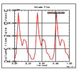
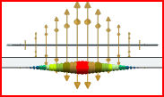

You mimic the physics that characterize the whole or a specific portion of the model using:
Loads and Constraints
Boundary conditions
Modeling objects
Simulation objects
Solution definition tools
Most entities are assigned to geometric features of the model (points, edges, faces, or solid bodies), the solver ultimately applies these to the elements.
Entities may vary according to different parameters including temperature and time.

